Shakshat Virtual Lab 
INDIAN INSTITUTE OF TECHNOLOGY GUWAHATI
Task
Create an icon to represent a "Pen-Drive" on the computer screen.
Steps to follow :
Sketch an outline of a typical pen drive in 2 dimensional form as familiar to you.
Refine the outline by removing all unnecessary lines, features and clutter.
Ask yourself : Does this figure look like how pen drives look like in real life.
Isolate or consolidate significant features of all pen drives you have noticed till now.
Use any graphic designing tool like Photoshop and construct the pen drive figure from your sketch.
Assign colours, shadows, highlights as you deem fit.
After your design is ready you may compare it with solutions provided at http://www.iconarchive.com/search?q=USB+drive
Refer illustrative tutorials below which show step by step procedure involving designing and icon graphically. The first link opens a tutorial on how to use use a software (in this case INKSCAPE an open source application) and the second link describes the creation of a LIGHT BULB icon using INKSCAPE.
| 1. Draw the basic outline as close to 48x48 pixels as possible. |
|
| 2. Fill in with black and white to create detail |
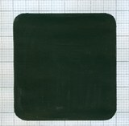
|
| 3. Add color and anti-aliasing (less than five colors) |
|
| 4. Add gradients for a smooth, realistic effect, add a drop shadow. |
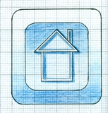 |
|
5. Do not include a text string naming the concept - your images alone must be enough to convey the right associations - you may use up to one "iconic word" (such as "fax" or "loan") |
|
| 6. Each icon should be prepared as a separate .gif or .jpg file. |
 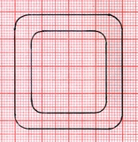
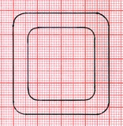 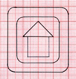
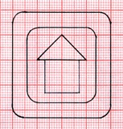


 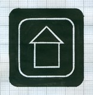
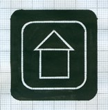 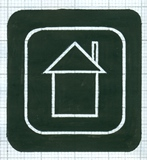
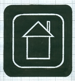 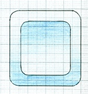
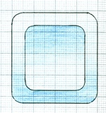 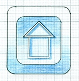
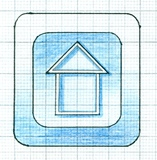
i) Introduction to icon designing using Inkscape (pdf)
ii) Creating light bulb icon using Inkscape. You can copy the link below and open it in a new browser window / tab. (http://vector.tutsplus.com/tutorials/illustration/how-to-create-a-vector-light-bulb-icon-with-inkscape)